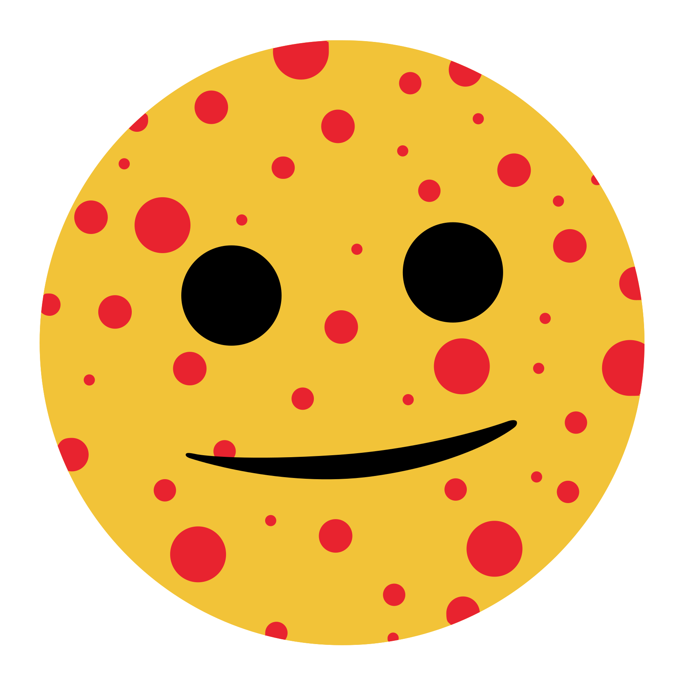

America's vaccine advisory committee is accepting nominations through December 31. Nobody has more field experience than me. (I'm a virus. That's the point.)
HHS IS REBUILDING AMERICA'S VACCINE ADVISORY COMMITTEE… AGAIN. WELL, GOOD NEWS: I'VE GOT CENTURIES OF FIELD EXPERIENCE. PUT MY NAME IN.
SECRETARY KENNEDY IS LOOKING FOR NEW MEMBERS FOR THE ADVISORY COMMITTEE ON IMMUNIZATION PRACTICES — THE PANEL THAT RECOMMENDS WHICH VACCINES YOUR FAMILY GETS. THE OLD MEMBERS HAD AN ANNOYING HABIT OF RECOMMENDING VACCINES.
The Advisory Committee on Immunization Practices advises the CDC on which vaccines Americans should get, and when. Its recommendations shape the childhood schedule and what insurance covers.
In June 2025, HHS Secretary Robert F. Kennedy Jr. removed all 17 members and appointed his own. On March 16, 2026, in a lawsuit led by the American Academy of Pediatrics, a federal judge in Massachusetts stayed 13 of those appointments and every vote the reconstituted committee had taken. ACIP has not met since December 2025; CDC has cancelled all three of its 2026 meetings. On October 30, 2026, HHS opened nominations to rebuild it — with broader language that no longer specifies vaccine expertise.
The U.S. is in its largest measles outbreak in 35 years and
Sources: Federal Register, Oct. 30, 2026 · The Washington Sun, Oct. 30, 2026 · Scientific American, Mar. 2026